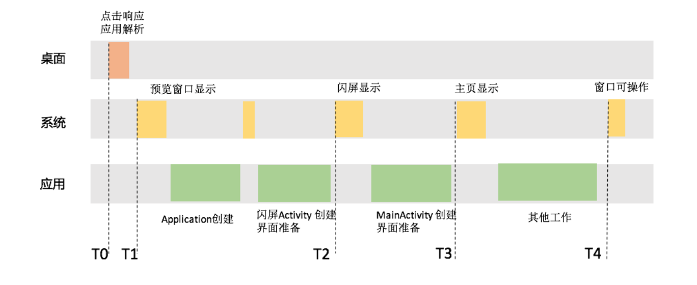
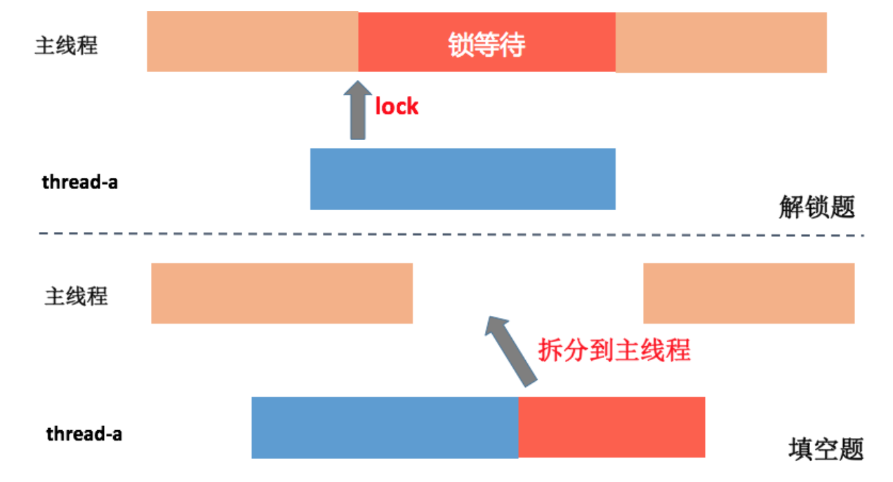
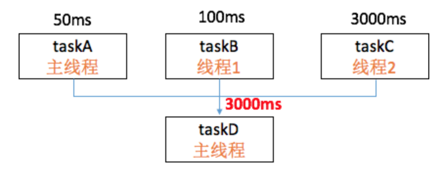
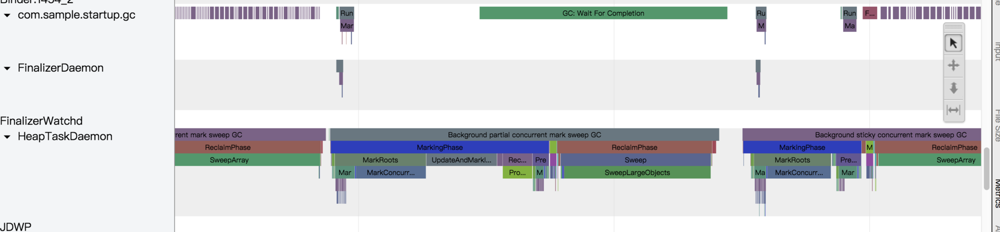
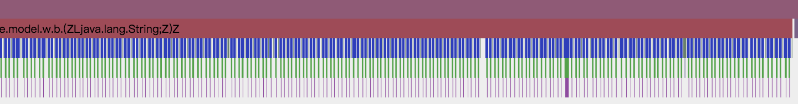

在超市排队结账，扫码支付启动十几秒都还没完成，只能换一个工具支付？
想买本书充实一下，页面刷出来时候十几秒都不能操作，那就换一个应用购买？
用户如果想打开一个应用，就一定要经过“启动”这个步骤。启动时间的长短，不只是用户体验的问题，对于淘宝、京东这些应用来说，会直接影响留存和转化等核心数据。对研发人员来说，启动速度是我们的“门面”，它清清楚楚可以被所有人看到，我们都希望自己应用的启动速度可以秒杀所有竞争对手。
那启动过程究竟会出现哪些问题？我们应该怎么去优化和监控应用的启动速度呢？今天我们一起来看看这些问题该如何解决。
启动分析
在真正动手开始优化之前，我们应该先搞清楚从用户点击图标开始，整个启动过程经过哪几个关键阶段，又会给用户带来哪些体验问题。
1. 启动过程分析

我以微信为例，用户从桌面点击图标开始，会经过 4 个关键阶段。
-
T1 预览窗口显示。系统在拉起微信进程之前，会先根据微信的 Theme 属性创建预览窗口。当然如果我们禁用预览窗口或者将预览窗口指定为透明，用户在这段时间依然看到的是桌面。
-
T2 闪屏显示。在微信进程和闪屏窗口页面创建完毕，并且完成一系列 inflate view、onmeasure、onlayout 等准备工作后，用户终于可以看到熟悉的“小地球”。
-
T3 主页显示。在完成主窗口创建和页面显示的准备工作后，用户可以看到微信的主界面。
-
T4 界面可操作。在启动完成后，微信会有比较多的工作需要继续执行，例如聊天和朋友圈界面的预加载、小程序框架和进程的准备等。在这些工作完成后，用户才可以真正开始愉快地聊天。
2. 启动问题分析
从启动流程的 4 个关键阶段，我们可以推测出用户启动过程会遇到的 3 个问题。这 3 个问题其实也是大多数应用在启动时可能会遇到的。
- 问题 1：点击图标很久都不响应
如果我们禁用了预览窗口或者指定了透明的皮肤，那用户点击了图标之后，需要 T2 时间才能真正看到应用闪屏。对于用户体验来说，点击了图标，过了几秒还是停留在桌面，看起来就像没有点击成功，这在中低端机中更加明显。
- 问题 2：首页显示太慢
现在应用启动流程越来越复杂，闪屏广告、热修复框架、插件化框架、大前端框架，所有准备工作都需要集中在启动阶段完成。上面说的 T3 首页显示时间对于中低端机来说简直就是噩梦，经常会达到十几秒的时间。
- 问题 3：首页显示后无法操作。
既然首页显示那么慢，那我能不能把尽量多的工作都通过异步化延后执行呢？很多应用的确就是这么做的，但这会造成两种后果：要么首页会出现白屏，要么首页出来后用户根本无法操作。
很多应用把启动结束时间的统计放到首页刚出现的时候，这对用户是不负责任的。看到一个首页，但是停住十几秒都不能滑动，这对用户来说完全没有意义。启动优化不能过于 KPI 化，要从用户的真实体验出发，要着眼从点击图标到用户可操作的整个过程。
启动优化
启动速度优化的方法和卡顿优化基本相同，不过因为启动实在是太重要了，我们会更加“精打细算”。我们希望启动期间加载的每个功能和业务都是必须的，它们的实现都是经过“千锤百炼”的，特别是在中低端机上面的表现。
1. 优化工具
“工欲善其事必先利其器”，我们需要先找到一款适合做启动优化分析的工具。
你可以先回忆一下“卡顿优化”提到的几种工具。Traceview 性能损耗太大，得出的结果并不真实；Nanoscope 非常真实，不过暂时只支持 Nexus 6P 和 x86 模拟器，无法针对中低端机做测试；Simpleperf 的火焰图并不适合做启动流程分析；systrace 可以很方便地追踪关键系统调用的耗时情况，但是不支持应用程序代码的耗时分析。
综合来看，在卡顿优化中提到“systrace + 函数插桩”似乎是比较理想的方案，而且它还可以看到系统的一些关键事件，例如 GC、System Server、CPU 调度等。
我们可以通过下面的命令，可以查看手机支持哪些 systrace 类型。不同的系统支持的类型有所差别，其中 Dalvik、sched、ss、app 都是我们比较关心的。
python systrace.py --list-categories通过插桩，我们可以看到应用主线程和其他线程的函数调用流程。它的实现原理非常简单，就是将下面的两个函数分别插入到每个方法的入口和出口。
class Trace { public static void i(String tag) { Trace.beginSection(name); } public static void o() { Trace.endSection(); }}当然这里面有非常多的细节需要考虑，比如怎么样降低插桩对性能的影响、哪些函数需要被排除掉。最终改良版的 systrace 性能损耗在一倍以内，基本可以反映真实的启动流程。函数插桩后的效果如下，你也可以参考课后练习的 Sample。
class Test { public void test() { Trace.i("Test.test()"); // 原来的工作 Trace.o()； }}只有准确的数据评估才能指引优化的方向，这一步是非常非常重要的。我见过太多同学在没有充分评估或者评估使用了错误的方法，最终得到了错误的方向。辛辛苦苦一两个月，最后发现根本达不到预期的效果。
2. 优化方式
在拿到整个启动流程的全景图之后，我们可以清楚地看到这段时间内系统、应用各个进程和线程的运行情况，现在我们要开始真正开始“干活”了。
具体的优化方式，我把它们分为闪屏优化、业务梳理、业务优化、线程优化、GC 优化和系统调用优化。
- 闪屏优化
今日头条把预览窗口实现成闪屏的效果，这样用户只需要很短的时间就可以看到“预览闪屏”。这种完全“跟手”的感觉在高端机上体验非常好，但对于中低端机，会把总的的闪屏时间变得更长。
如果点击图标没有响应，用户主观上会认为是手机系统响应比较慢。所以我比较推荐的做法是，只在 Android 6.0 或者 Android 7.0 以上才启用“预览闪屏”方案，让手机性能好的用户可以有更好的体验。
微信做的另外一个优化是合并闪屏和主页面的 Activity，减少一个 Activity 会给线上带来 100 毫秒左右的优化。但是如果这样做的话，管理时会非常复杂，特别是有很多例如 PWA、扫一扫这样的第三方启动流程的时候。
- 业务梳理
我们首先需要梳理清楚当前启动过程正在运行的每一个模块，哪些是一定需要的、哪些可以砍掉、哪些可以懒加载。我们也可以根据业务场景来决定不同的启动模式，例如通过扫一扫启动只需要加载需要的几个模块即可。对于中低端机器，我们要学会降级，学会推动产品经理做一些功能取舍。但是需要注意的是，懒加载要防止集中化，否则容易出现首页显示后用户无法操作的情形。
- 业务优化
通过梳理之后，剩下的都是启动过程一定要用的模块。这个时候，我们只能硬着头皮去做进一步的优化。优化前期需要“抓大放小”，先看看主线程究竟慢在哪里。最理想是通过算法进行优化，例如一个数据解密操作需要 1 秒，通过算法优化之后变成 10 毫秒。退而求其次，我们要考虑这些任务是不是可以通过异步线程预加载实现，但需要注意的是过多的线程预加载会让我们的逻辑变得更加复杂。
业务优化做到后面，会发现一些架构和历史包袱会拖累我们前进的步伐。比较常见的是一些事件会被各个业务模块监听，大量的回调导致很多工作集中执行，部分框架初始化“太厚”，例如一些插件化框架，启动过程各种反射、各种 Hook，整个耗时至少几百毫秒。还有一些历史包袱又非常沉重，而且“牵一发动全身”，改动风险比较大。但是我想说，如果有合适的时机，我们依然需要勇敢去偿还这些“历史债务”。
- 线程优化
线程优化就像做填空题和解锁题，我们希望能把所有的时间片都利用上，因此主线程和各个线程都是一直满载的。当然我们也希望每个线程都开足马力向前跑，而不是作为接力棒。所以线程的优化主要在于减少 CPU 调度带来的波动，让应用的启动时间更加稳定。
从具体的做法来看，线程的优化一方面是控制线程数量，线程数量太多会相互竞争 CPU 资源，因此要有统一的线程池，并且根据机器性能来控制数量。
线程切换的数据我们可以通过卡顿优化中学到的 sched 文件查看，这里特别需要注意 nr_involuntary_switches 被动切换的次数。
proc/[pid]/sched: nr_voluntary_switches： 主动上下文切换次数，因为线程无法获取所需资源导致上下文切换，最普遍的是 IO。 nr_involuntary_switches： 被动上下文切换次数，线程被系统强制调度导致上下文切换，例如大量线程在抢占 CPU。另一方面是检查线程间的锁。为了提高启动过程任务执行的速度，有一次我们把主线程内的一个耗时任务放到线程中并发执行，但是发现这样做根本没起作用。仔细检查后发现线程内部会持有一个锁，主线程很快就有其他任务因为这个锁而等待。通过 systrace 可以看到锁等待的事件，我们需要排查这些等待是否可以优化，特别是防止主线程出现长时间的空转。

特别是现在有很多启动框架，会使用 Pipeline 机制，根据业务优先级规定业务初始化时机。比如微信内部使用的mmkernel、阿里最近开源的Alpha启动框架，它们为各个任务建立依赖关系，最终构成一个有向无环图。对于可以并发的任务，会通过线程池最大程度提升启动速度。如果任务的依赖关系没有配置好，很容易出现下图这种情况，即主线程会一直等待 taskC 结束，空转 2950 毫秒。

- GC 优化
在启动过程，要尽量减少 GC 的次数，避免造成主线程长时间的卡顿，特别是对 Dalvik 来说，我们可以通过 systrace 单独查看整个启动过程 GC 的时间。
python systrace.py dalvik -b 90960 -a com.sample.gc对于 GC 各个事件的具体含义，你可以参考《调查 RAM 使用情况》。

不知道你是否还记得我在“内存优化”中提到 Debug.startAllocCounting，我们也可以使用它来监控启动过程总 GC 的耗时情况，特别是阻塞式同步 GC 的总次数和耗时。
// GC 使用的总耗时，单位是毫秒Debug.getRuntimeStat("art.gc.gc-time");// 阻塞式 GC 的总耗时Debug.getRuntimeStat("art.gc.blocking-gc-time");如果我们发现主线程出现比较多的 GC 同步等待，那就需要通过 Allocation 工具做进一步的分析。启动过程避免进行大量的字符串操作，特别是序列化跟反序列化过程。一些频繁创建的对象，例如网络库和图片库中的 Byte 数组、Buffer 可以复用。如果一些模块实在需要频繁创建对象，可以考虑移到 Native 实现。
Java 对象的逃逸也很容易引起 GC 问题，我们在写代码的时候比较容易忽略这个点。我们应该保证对象生命周期尽量的短，在栈上就进行销毁。
- 系统调用优化
通过 systrace 的 System Service 类型，我们可以看到启动过程 System Server 的 CPU 工作情况。在启动过程，我们尽量不要做系统调用，例如 PackageManagerService 操作、Binder 调用等待。
在启动过程也不要过早地拉起应用的其他进程，System Server 和新的进程都会竞争 CPU 资源。特别是系统内存不足的时候，当我们拉起一个新的进程，可能会成为“压死骆驼的最后一根稻草”。它可能会触发系统的 low memory killer 机制，导致系统杀死和拉起（保活）大量的进程，从而影响前台进程的 CPU。
讲个实践的案例，之前我们的一个程序在启动过程会拉起下载和视频播放进程，改为按需拉起后，线上启动时间提高了 3%，对于 1GB 以下的低端机优化，整个启动时间可以优化 5%～8%，效果还是非常明显的。
总结
今天我们首先学习了启动的整个流程，其中比较关键的是 4 个阶段。在这 4 个阶段中，用户可能会出现“点击图标很久都不响应“”首页显示太慢“和”首页显示后无法操作“这 3 个问题。
接着我们学习了启动优化和监控的一些常规方法。针对不同的业务场景、不同性能的机器，需要采用不同的策略。有些知识点似乎比较“浅尝辄止”，我更希望你能够通过学习和实践将它们丰富起来。
我讲到的大部分内容都是跟业务相关，业务的梳理和优化也是最快出成果的。不过这个过程我们要学会取舍，你可能遇到过，很多产品经理为了提升自己负责的模块的数据，总会逼迫开发做各种各样的预加载。但是大家都想快，最后的结果就是代码一团糟，肯定都快不起来。
比如只有 1% 用户使用的功能，却让所有用户都做预加载。面对这种情况，我们要狠下心来，只留下那些真正不能删除的业务，或者通过场景化直接找到那 1% 的用户。跟产品经理 PK 可能不是那么容易，关键在于数据。我们需要证明启动优化带来整体留存、转化的正向价值，是大于某个业务取消预加载带来的负面影响。
启动优化是性能优化工作非常重要的一环，今天的课后作业是，在你过去的工作中，曾经针对启动做过哪些优化，最终效果又是怎样的呢？请你在留言区分享一下今天学习、练习的收获与心得。
课后练习
“工欲善其事必先利其器”，我多次提到“systrace + 函数插桩”是一个非常不错的卡顿排查工具，那么通过今天的Sample，我们一起来看一下它是如何实现的。需要注意的是 Sample 选择了 ASM 插桩的方式，感兴趣的同学可以课后学习一下它的使用方法，在后续我们也会有关于插桩的专门课程。
我们可以将 Sample 运用到自己的应用中，虽然它过滤了大部分的函数，但是我们还是需要注意白名单的配置。例如 log、加解密等在底层非常频繁调用的函数，都要在白名单中配置过滤掉，不然可能会出现类似下面这样大量的毛刺。

COMMUNITY NOTES
读者评论
请问下张老师，延迟拉起进程要怎么处理，在清单文件中四大组件有多进程，默认就初始化了所有的进程，这个有点不明白
老师，示例的tranfrom注册方法和直接调用registerTransform有什么区别吗？这块不是太懂
张老师，你好，我们在做了启动优化跟张老师所说90%相同，目前情况来看也取得了50%以上的启动速度提升，但是我们想做更加极致，现在发现有些手机有jit线程，这个在启动过程中占了大量的cpu时间片，我也翻看了源码，发现这个线程是在activitythread里面初始化的，是一个jvm线程，请问张老师，这个有方案关闭吗？
Unable to select a master clock domain because no path can be found from "SYSTRACE" to "LINUX_FTRACE_GLOBAL".解决方法在chrome浏览器的地址栏中输入：chrome://tracing之后点击左上角的load加载你生成的test.log.html文件就可以正常查看。
Unable to select a master clock domain because no path can be found from "SYSTRACE" to "LINUX_FTRACE_GLOBAL 老师，我查看生成的test.log.html报这个错误啊
sample 跑在真机出现下面错误：Unable to select a master clock domain because no path can be found from "SYSTRACE" to "LINUX_FTRACE_GLOBAL".换模拟器好了，有遇见类似的么😂
没有闪屏页面的APP情何以堪，老板还要求用户在没有闪屏过渡的情况下做到无感知启动。。
运行：python C:\Users\Administrator\AppData\Local\Android\Sdk\platform-tools\systrace\systrace.py gfx view wm am pm ss dalvik app sched -b 90960 -a com.sample.systrace -o test.html 后报错：ValueError: invalid literal for int() with base 10: ''
hi 老师，代码如何计算启动耗时啊？ad shell am start -W 计算规则怎么看的？
张老师，你好！我们app 统计耗时和文章说的差不多，在主页onWindowFocusChanged 时计算最终时长。分析的时候发现在主页onResume 和onWindowFocusChanged 之间的时间差很大，看了源代码以后发现onResume 和onWindowFocusChanged 之间会执行ViewRootImpl#performMeasure，但是performMeasure 也远小于他们的时间差(大概小了1倍)。这种情况该怎么去分析呢，有办法dump 这段时间有什么耗时操作？
请问对于生成的trace文件，分析的重点应该是在哪几个指标？界面上指标参数有点多
python systrace.py --list-cate...请问这种命令在什么环境运行，试了在adb shell中运行不了
Unable to select a master clock domain because no path can be found from "SYSTRACE" to "LINUX_FTRACE_GLOBAL". 这个是什么意思
王老师，请问线程的优先级是否需要考虑？
张老师，请问project.getProperties().get("android").registerTransform跟示例的注册Transform方式哪一种更好点呢？我见上面也有人问了同样的问题。
张老师， https://mp.weixin.qq.com/s/6Q818XA5FaHd7jJMFBG60w? 这篇文章中写到的 改变通信方式 部分，注册接口和访问接口是怎样的一个实现？ 没有看懂。
使用此插件集成到项目里面，然后打开生成的trace.html ，报了“Unable to select a master clock domain because no path can be found from "SYSTRACE" to "LINUX_FTRACE_GLOBAL". 关闭插件可以正常查看trace.html 。前面也有人遇到了
张老师，Sample涉及的操作都是在linux系统下执行的吗？windows跑有问题python $ANDROID_HOME/platform-tools/systrace/systrace.py gfx view wm am pm ss dalvik app sched -b 90960 -a com.sample.systrace -o test.log.html报错
虽然更新的很慢，但是我还是没有跟上节奏。前几篇都没有跑起来，今天的才真正的按照老师说的做了一次，加油。
虽然用了代理，但是我在运行gradle task ":systrace-gradle-plugin:buildAndPublishToLocalMaven"时也出现这个问题* What went wrong:A problem occurred evaluating root project 'Chapter07'.> Could not find method google() for arguments [] on repository container.将google()删掉，会报Could not find com.android.tools.build:gradle:3.0.1.